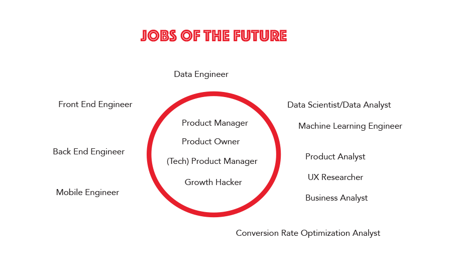

Did you know that 90% of the data in the world today was created in the last two years?
Around the world, companys and organizations are creating more data every day, yet most are struggling to benefit from it. The US alone will face a shortage of 150,000+ data analysts and an additional 1.5 million data-savvy managers.
According to Harvard Business Review Data Scientist is the Sexiest Job of the 21st Century.

"Data is the new Oil" -Ann Winblad
We are in a digital economy where data is more valuable than ever. It is the key to the smooth functionality of everything from the government to local companies.
But who are these people handling all the data?

DATA SCIENTIST
It is generally expected that data scientists are able to work with various elements of mathematics, statistics and computer science. A Data Scientist will be able to take data science projects from end-to-end.
Skills
Mathematics
Programming
Statistics
Analytics
DATA ANALYST
Data analysts collect, process and perform statistical analyses of data. Their skills may not be as advanced as data scientists (e.g. they may not be able to create new algorithms), but their goals are the same - to discover how data can be used to answer questions and solve problems.
Skills
Statistics
Analytics
Communication
Business Knowledge
GROWTH HACKER
Growth hackers are a hybrid of marketer and coder, one who looks at the traditional question of "How do I get customers for my product"? and answers with A/B tests, landing pages, viral factor, email deliverability, and Open Graph. A Growth Hacker lives at the intersection of data, product, and marketing. While driven by data and moving metrics, Growth Hackers are also creative problem solvers.
SKILLS
Statistics
Programming
Database querying/SQL
Web Scraping
A/B Testing
Exel Modeling
Analytics
DATA ENGINEER
The data engineer gathers and collects the data, stores it, does batch processing or real-time processing on it, and serves it via an API to a data scientist who can easily query it. They are typically focused on coding and cleaning up data sets, and implementing requests coming from Data Scientists.
SKILLS
Programming
Mathematics
Big Data
UX RESEARCHER
A UX researcher is the champion of a user's needs. The goal of a researcher is to answer the twin questions of "Who are our users?" and "What do our users want?" Typically, this role entails interviewing users, researching market data, and gathering findings.
SKILLS
Statistics
Analysis
User Testing
Reporting
PRODUCT MANAGER
The responsibility of a product manager depends on their context within an organization. In some cases a product manager will be responsible for launching a new product, in other cases they will be responsible for evolving an established one.
SKILLS
Database querying/SQL
Analytics
A/B Testing
Basic Coding
Interactive Prototyping
Avarege Entry-level Salaries